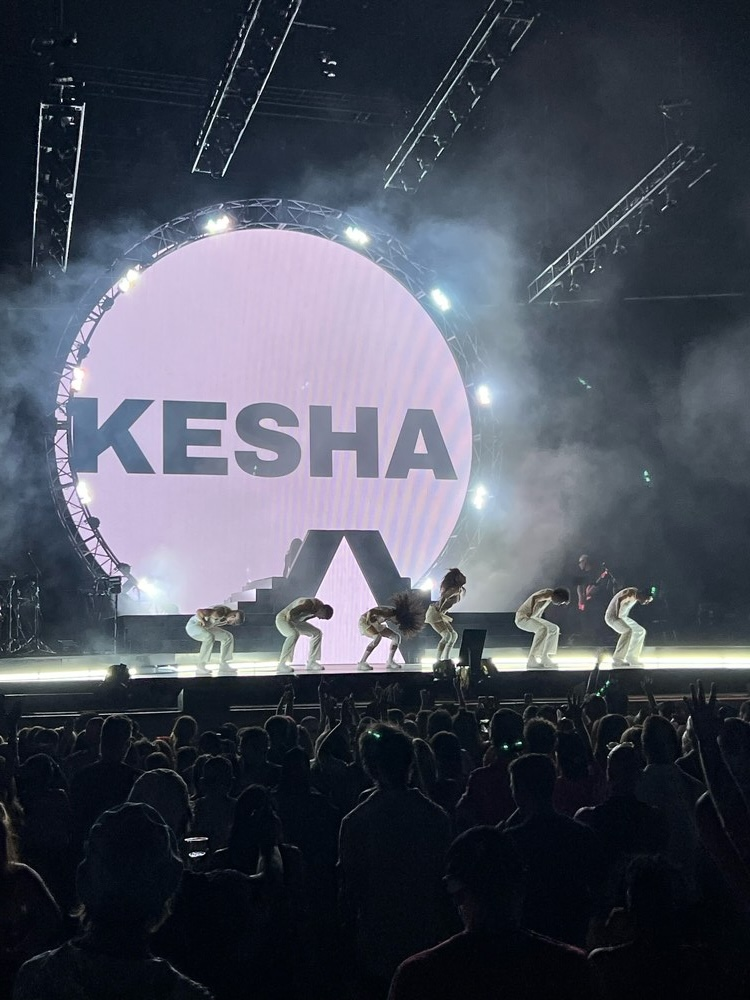

Welcome to The Concert Diaries! This website is about my love for music and the concerts I have attended. Going to concerts is one of my favorite things to do because I love experiencing live music and making memories.
Over the years, I have been able to see some amazing artists perform live. Some of my favorites include The Weeknd, Kesha, Journey, and Tate McRae. Each concert has been a different experience, and I love being able to look back at the pictures and memories.
There is something special about hearing your favorite songs performed live. I love being in a crowd of people who love an artist as much as I do. It's so exciting seeing the stage lights, and getting to sing along to songs I know word for word. Concerts are experiences I will always remember!
Here is a picture I took at Kesha's concert!

Visit Utah State University to learn more about education.
© 2026 The Concert Diaries. All rights reserved.
Email: concertdiaries@example.com